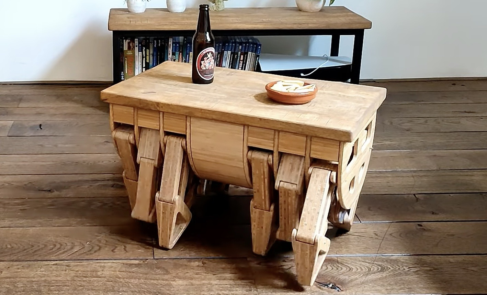

<div class="textcontainer">
<br></br>
<h3 align="center"><b>I >> Intro</b></h3>
<p class="margin"></p>
Here are a couple cool ideas for my final project...
<p class="margin"></p>
<div class="row">
<div class="col-sm-4">
<h4>Idea 1: Walking Table</h4>
<p>What has 4 legs and can't walk? A table! But what if we could change that? Introducing the Walking Table, a functional piece of furniture that moves at your command. Need to grab your coffee mug that's all the way across the room, but don't have the energy to get up and retrieve it? No problem! Just grab the walking table remote and guide your new favorite table over to your side.</p>
<p>One problem here is that this has already been done (see picture). Which is fine, but I want to make some modifications, listed here:</p>
<ul>
<li>Make it smaller, with fewer parts (fewer legs)</li>
<li>Add a height-adjustment capability</li>
<li>Make the tabletop a cool lacquer-wood inlaid kind of design</li>
</ul>

</div>
<div class="col-sm-4">
<h4>Idea 2: Cash Cow</h4>
<p>Have you ever wanted your own personal ATM? Look no further! For those of you out there who love organizing your personal belongings, but find that your wallet or purse can't hold the fat stacks of cash you bring back home every day, the Cash Cow is perfect for you. With this device, you can withdraw or deposit the desired amount of cash you want, whenever you want, and it will constantly keep track of how much money you have in the bank.</p>
</div>
<div class="col-sm-4">
<h4>Idea 3: Self-Watering Planter</h4>
<p>Watering plants can be hard to keep track of. Unfortunately, you can't use a sprinkler indoors, unless you want to get all your stuff wet! The self-watering planter solves this problem by constantly monitoring moisture levels in the soil, and whenever it gets too dry, activates a water pump to give the dry plant a nice shower!</p>
</div>
</div>
</div>